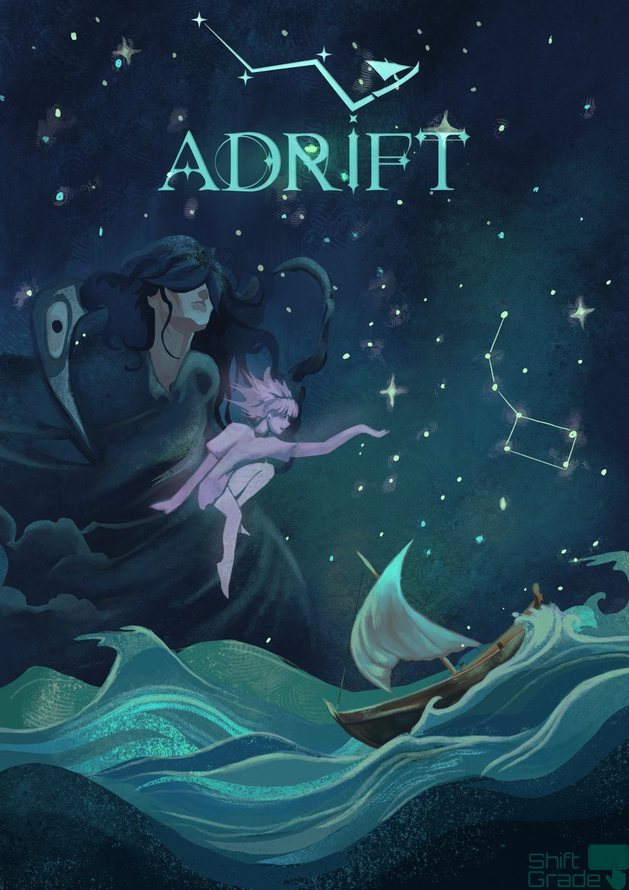
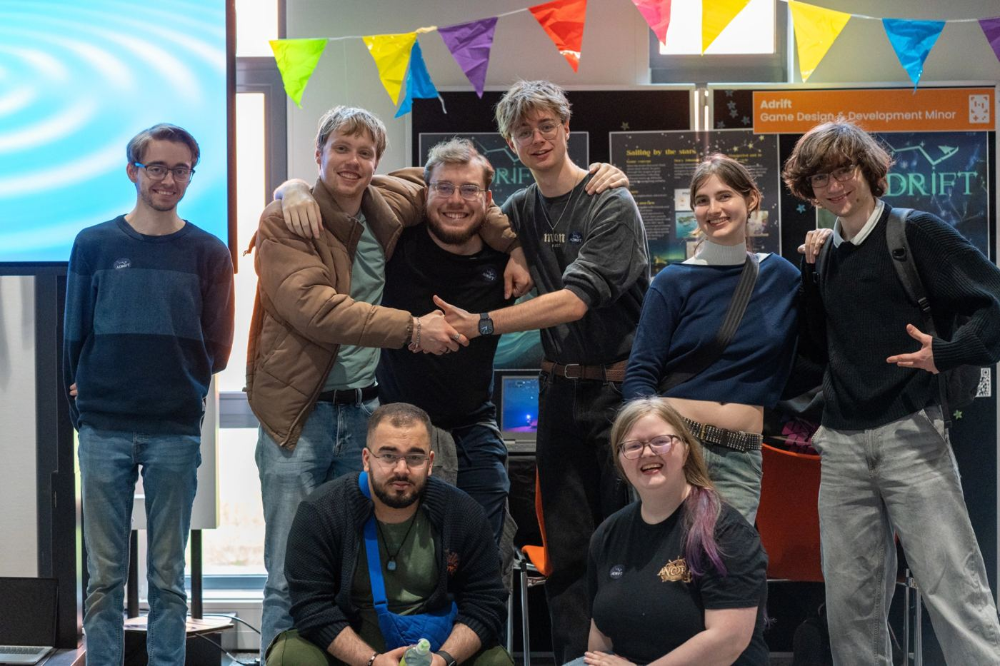

Bekijk de trailer op InstagramWatch the trailer on Instagram
Bekijk: dialoogsysteem, aanmeren & bootbesturingWatch: dialogue system, docking & boat controls

Adrift
Een zeilgame waarin je navigeert op de sterren. We waren met ongeveer veertig studenten en bouwden de game van idee tot release, met aparte teams en afdelingen zoals in een echte studio. A sailing game where you navigate by the stars. About forty students built it from idea to release, with separate teams and departments like in a real studio.
- RolRole
- Lead programmer, Scrum Master en Version Control & Development LeadLead programmer, Scrum Master and Version Control & Development Lead
- Team
- Ongeveer 40 studenten in 7 teamsAbout 40 students in 7 teams
- DuurTime
- Een semester, meer dan 6 sprintsOne semester, 6+ sprints
- Tech
- Unity, C#, GitHub
- Dialoogsysteem voor designers. Een modulair systeem met ScriptableObjects en een eigen Unity-editor, waarmee designers dialogen maken zonder code. Later uitgebreid met kleuren, teksttrillingen en automatische voortgang die de beweging niet onderbreekt.
- Dialogue system for designers. A modular system built on ScriptableObjects and a custom Unity editor, so designers can create dialogue without writing code. Later extended with colours, text shake and automatic progression that doesn't interrupt movement.
- Bootbesturing. Ik vereenvoudigde de physics-gebaseerde besturing tot een arcade-achtige variant, met een schakelaar naar de moeilijke modus, tutorials voor beide modi en een aanmeersysteem.
- Boat controls. I simplified the physics-based controls into an arcade-style version, with a toggle back to the hard mode, tutorials for both modes and a docking system.
- Een tijdelijke state machine die bleef. Mijn snelle oplossing om beweging te stoppen tijdens dialoog groeide, met collega's die het uitbreidden, uit tot de Input Map Manager van het hele spel.
- A temporary state machine that stayed. My quick fix for stopping movement during dialogue grew, with colleagues extending it, into the Input Map Manager for the whole game.
- Debug-menu. Teleporteren naar elk eiland, tutorials resetten en sneller spelen. Veel gebruikt bij tests en sprint reviews, en door andere programmeurs uitgebreid.
- Debug menu. Teleport to any island, reset tutorials and speed up play. Used heavily in testing and sprint reviews, and extended by other programmers.
- Versiebeheer voor 7 teams. Pull requests, merge-dagen, een code- en bestandsstandaard, en hulp bij merge-conflicten in één gedeeld Unity-project.
- Version control for 7 teams. Pull requests, merge days, a code and file-structure standard, and help with merge conflicts in one shared Unity project.
Adrift werd gespeeld op het Student Festival, waar de stoelen bijna nooit leeg waren, staat op itch.io, en heeft daar tot nu toe alleen maar positieve reviews — die ik met enige trots af en toe herlees. Adrift was played at the Student Festival, where the chairs were almost never empty, is on itch.io, and has nothing but positive reviews there so far — which I reread every once in a while, with some pride.